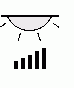
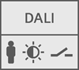

DALI devices
DALI 通信协议可实现对可切换（可调光）灯光应用的控制。 DALI 设备仅受 PXC3…A 类型自动化站支持。
有关库中可供使用的预定义设备，请参阅库。
Specific lamps
DALI type | 姓名 | 简称 | 描述 | 设计版 |
|---|---|---|---|---|
0 | FL | 日光灯
| V6.0 V5.x | |
6 | LED | LED module
| V6.0 V5.x | |
5 | CNV | 直流转换器
| V6.0 V5.xSP | |
3 | LV | 低压卤素灯
| V6.0 V5.x | |
7 | SWI | 开关功能
| V6.0 V5.x | |
8 | RGB | 色彩控制
| 色彩控制 | V6.3 |


Generic lamps
DALI type | 姓名 | 简称 | 描述 | 设计版 |
|---|---|---|---|---|
0 3 4 5 6 | GDL | 可调光灯  | 通用可调光灯
| V6.0 |
0 3 4 5 6 7 | GSL | 开关灯 | 通用开关灯
|
Emergency lamps
应急灯用于维护应急照明。Emergency lamp properties
DALI type | 姓名 | 简称 | 描述 | 设计版 |
|---|---|---|---|---|
1 | EMLC | 应急灯具
| 维护的应急灯具（独立） | V6.0 |
1 | EMLA | 应急灯具和调光灯
| 维护的应急灯具和可调光灯 | |
1 | EMLB | 应急灯具和开关灯
| 维护应急灯具和开关灯 |


用于非维护应急照明的应急灯。Emergency lamp properties
DALI type | 姓名 | 简称 | 描述 | 设计版 |
|---|---|---|---|---|
1 | EMLD | 应急灯具
| 免维护应急灯具（独立） | V6.0 |
1 | EMLD_FL | 梳状应急灯&调光灯
| 组合式免维护应急灯具和可调光灯 | |
1 | EMLD_SWI | 梳状应急灯&开关灯
| 组合式免维护应急灯具和开关灯 |


Generic input devices
Generic input devices properties.
DALI type | 姓名 | 简称 | 描述 | 设计版 |
|---|---|---|---|---|
- | GID | DALI-2 通用输入  | DALI-2 通用输入设备
| V6.3 |
Additional information
有关 DALI 的更多信息，请访问https://www.digitalilluminationinterface.org/.
下表列出了各个制造商的文档作为示例。
例子 | |
|---|---|
文件说明 | 下载pdf |
DALI 标准 IEC 62386，概述 | |
欧司朗 | |
ZUMTOBEL | |